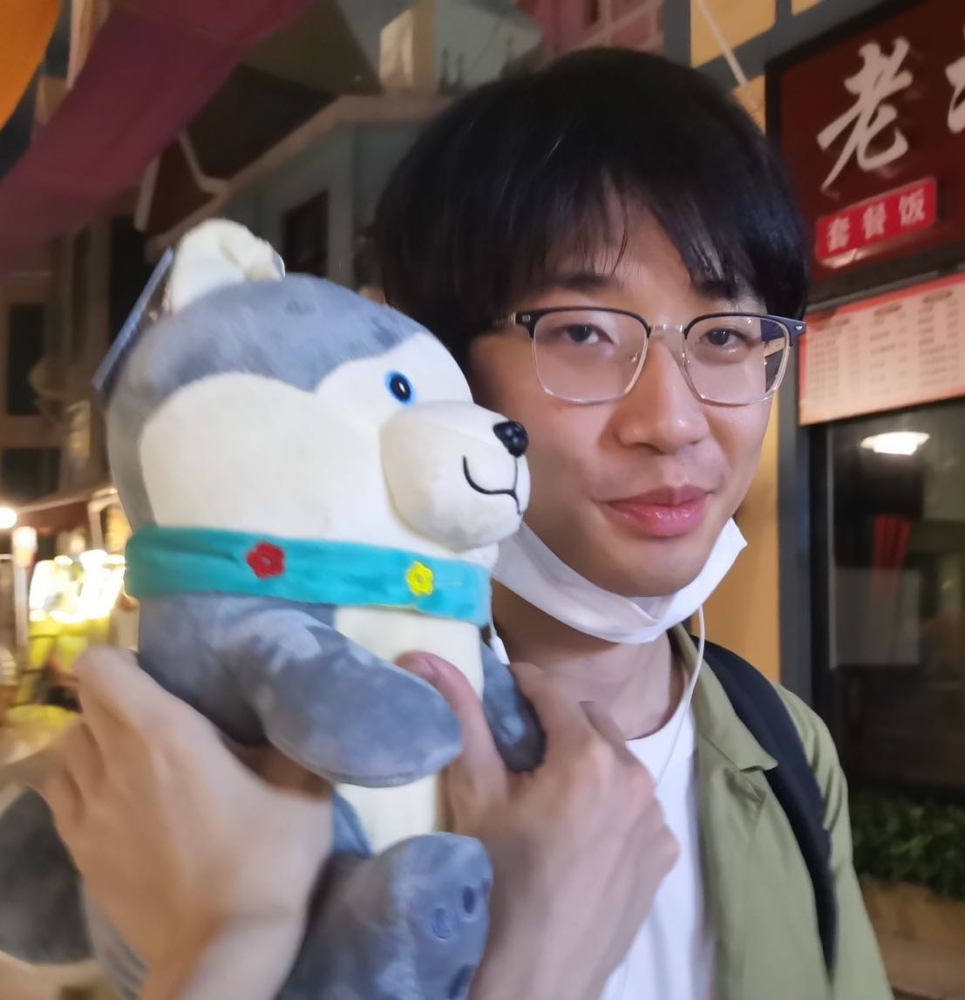
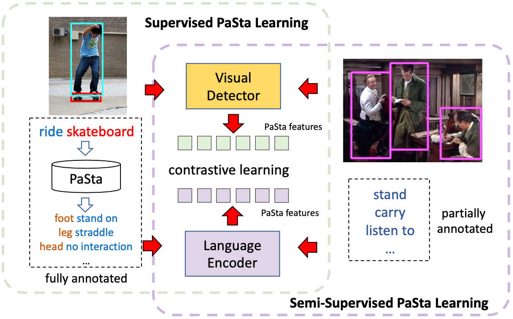
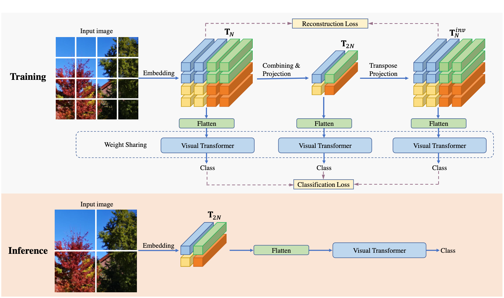
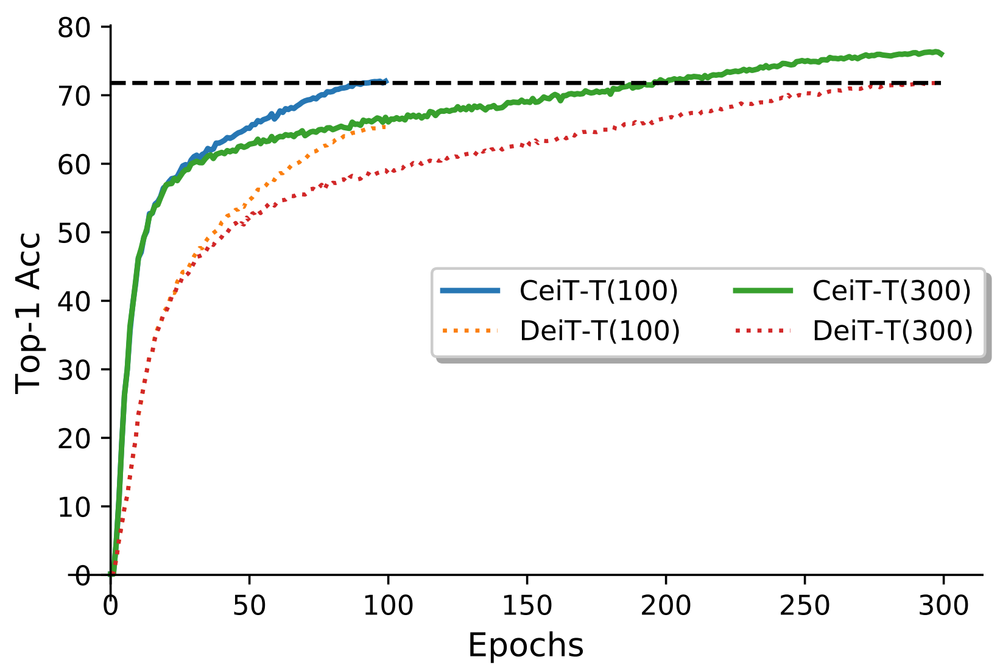
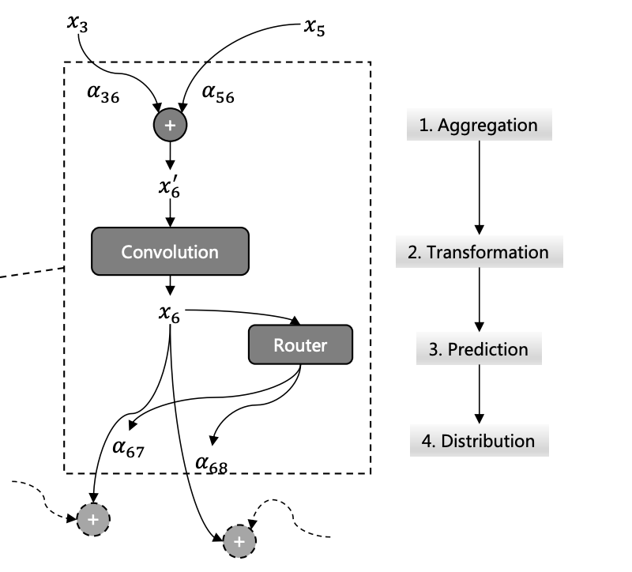
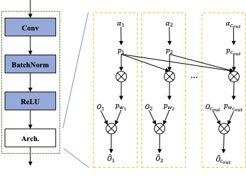

|
Shaopeng Guo
I am a research assitant at HKUST supervised by Prof. Chi-Keung Tang and Prof. Yu-Wing Tai , where I work on computer vision and machine learning.
I also obtained Bachelor’s degree at HKUST in 2018. From 2018 to July 2021, I worked as a full-time R&D in a leading Chinese Tech. Company for three years.
Email /
Google Scholar /
Github
|

|
|

|
Learning Transferable Part-Level Representations by Language Supervation
Shaopeng Guo, Yonglu Li, Xinpeng Liu, Xinyu Xu, Cewu Lu, Yu-Wing Tai, Chi-Keung Tang
CVPR 2022 submission, under review
Project Page / PDF / Code
Instead of directly applying discrete human-part labels during classification, we incorporate a language model BERT to transform natural language labels to continuous latent feature vectors and train our model by contrastive loss.
|
|

|
Multi-scale Cooperative Learning for TrainingEfficient Visual Transformers
Jiangfan Han*, Shaopeng Guo*, Jianbo Liu*, Kun Yuan, Hongsheng Li, Xiaogang Wang
IJCV submission, under review (* indicates equal contribution)
Project Page / PDF / Code
We propose a Multi-scale Cooperative Learning (MCL) framework to train an efficient visual Transformer. With the help of the proposed patch compression mechanism, the model can inference with about 2x faster speed and better performance.
|
|

|
Incorporating Convolution Designs into Visual Transformers
Kun Yuan, Shaopeng Guo, Ziwei Liu, Xinyu Xu, Aojun Zhou, Fengwei Yu, Wei Wu
ICCV, 2021
PDF / Code
We propose a new Convolution-enhanced image Transformer (CeiT) which combines the advantages of CNNs in extracting lowlevel features, strengthening locality, and the advantages of Transformers in establishing long-range dependencies.
|
|

|
Differentiable Dynamic Wirings for Neural Networks
Kun Yuan, Quanquan Li, Shaopeng Guo, Dapeng Chen, Aojun Zhou, Fengwei Yu, Ziwei Liu
ICCV, 2021
PDF
We propose a method called Differentiable Dynamic Wirings (DDW), which learns the instance-aware connectivity that creates different wiring patterns for different input images.
|
|

|
DMCP: Differentiable Markov Channel Pruning for Neural Networks
Shaopeng Guo, Yujie Wang, Quanquan Li, Junjie Yan
CVPR, 2020 (Oral Presentation)
Project Page / PDF / code
We model the channel pruning as a Markov process, in which each state represents for retaining the corresponding channel during pruning.
|
|
{kind=link}